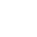

I'm a Senior Software Engineer with over a decade of experience designing, building and modernizing software across frontend, full-stack and backend roles. I help teams turn hard technical problems into scalable, maintainable products, from evolving legacy platforms to shipping new features, and I bring modern AI-assisted engineering practices into everyday development.
What I do
-
Frontend & Backend
My core stack is TypeScript, JavaScript and React. Over the last several years I've built large-scale web applications, designed frontend architectures and delivered geospatial visualization platforms. I've also worked across the stack, especially with .NET/C#, and keep my backend skills current with Python.
-
Architecture & collaboration
I like getting involved before the first line of code: leading technical discovery, shaping architecture and weighing trade-offs. I care about developer experience and work closely with Product and UX so that what we ship solves the real problem, not just the ticket.
-
AI-assisted engineering
AI is part of my professional engineering workflow, well beyond code completion. I work with Claude Code and practice context engineering: project memory files, custom skills and MCP integrations give agents a real understanding of the codebase, its conventions and its tools. I run plan-first, spec-driven workflows and use multiple agents in parallel for exploration, implementation and review, while design decisions, testing and code quality remain my responsibility. The result: faster ramp-up in unfamiliar domains and well-engineered solutions delivered sooner.
Want the full story? Grab a copy of my CV.
Download my full CVWhat makes me special
-

Good communication
I value open and honest communication. I believe that clear discussions help teams align expectations, solve problems more effectively and build stronger working relationships.
-
Team player
I enjoy collaborating with others, sharing knowledge and learning from different perspectives. I’m comfortable asking for help when needed and supporting teammates whenever I can.
-
Creative Thinking
I enjoy exploring different perspectives and challenging assumptions. Some of the best solutions emerge when we're willing to look beyond conventional approaches.
-
Multilingual
Portuguese is my native language. I’m fluent in English and currently learning Dutch.
-
Problem Solving
I enjoy tackling complex problems and finding practical solutions. Once a problem is solved, I believe it's important to understand its root cause and learn from the experience.
-
Adaptability
I’m comfortable stepping outside my comfort zone to learn new technologies, take on unfamiliar challenges or support the needs of the team.
-
Empathy & Respect
I believe successful teams are built on mutual respect, trust and understanding. Different backgrounds and perspectives make teams stronger.
-
Accountability and humbleness
I'm not afraid to admit my mistakes, doing so is a great way to evolve.